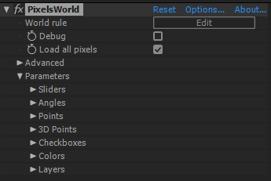

Link parameters
The outside parameters are provided for you to do some animation.

As you can see, there are 7 types of parameters are provided.
- Sliders
- Angles
- Points
- 3D Points
- Checkboxes
- Colors
- Layers
Each of them have 10 controler for using.
Example :
link_slider.shader
void main(){
outColor = vec4(uv,slider[0],1.0);
}
If you change the slider 0, the color in your scene would change.

Details
The parameters decleared in PixelsWorld are as below :
parameters.shader
uniform float slider[10];
uniform float angle[10];
uniform bool checkbox[10];
uniform vec2 point[10];
uniform vec3 point3d[10];
uniform vec4 color[10];
uniform sampler2D layer[10];
uniform sampler2D inLayer;
NOTE :
- The "inLayer" means Input layer.
- The sampler2D is a value type provided by GLSL, you don't need to understand this value type. If you want to use the layer parameter. Please see the "getColor" section
- "uniform" means global value.